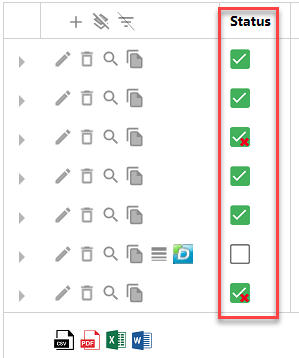
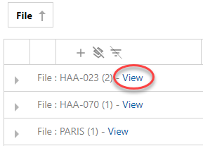

You can also access this page via Records > Overview.
Register, organize, edit and/or export records.
You may not be able to perform all features described below. This depends on the role that has been assigned to you.
Register
Make sure new records are saved in the correct file and are archived properly.
Select
 (New), select a record type (for example Contract) and an archiving method (web upload or scan), add the correct documents and click Register.
(New), select a record type (for example Contract) and an archiving method (web upload or scan), add the correct documents and click Register.Fill out the fields (meta data), like department, file, lawyer (the fields depend on the chosen record type). Click Register.
The documents are archived on the correct location.
Attention: When creating a registration of a paper document, you do not immediately add documents. First, you create a frontpage with barcode or Dymo Label.
Click
 (Barcode) to open the frontpage, check and print it.
(Barcode) to open the frontpage, check and print it.Click
 (Print Dymo Label) to print the Dymo Label.
(Print Dymo Label) to print the Dymo Label. Put the frontpage or the label on top of the paper document that belongs to the registration and scan it.
Metadata that is added, is saved in a relational database and synchronized with (linked to) the archived documents with the help of a so-called background processor (Hangfire). You can view the status of this synchronization in Records Overview.

Organize
Group by dragging a colomn header above the grid. You can drag columns back to the grid too.
Sort (ascending/descending) by clicking on the column header one time.
Show/not show columns by selecting the button Show Field Chooser (bottom left corner).
Drag and drop columns in the Column Chooser to and from the grid.
Attention: When grouping on File, you can find all registrations for a file; Click on View.

Edit records
Attention: Edit and View are also available on Binary-level (when clicking on
 ). In that case, you will only edit/view the chosen document (in Document View).
). In that case, you will only edit/view the chosen document (in Document View).Edit the record; Select
 (Edit). Not all information can be edited after registration.
(Edit). Not all information can be edited after registration.Delete the record; Select
 (Delete).
(Delete).View documents that belong to the record in ZyLAB Legal Review; Select
 (View). The documents are shown in the result list of Legal Review.
(View). The documents are shown in the result list of Legal Review.Copy the record; Select
 (Copy).
(Copy). Attention: By default, copy is not available (key="EnableRegistrationCopying=false").
Please contact your Administrator for activation (set key to true).
Export
Export all records to one of the following formats: .csv, .pdf, .xlsx or .rtf.
Click on the correct icon in the bottom left corner of the grid.